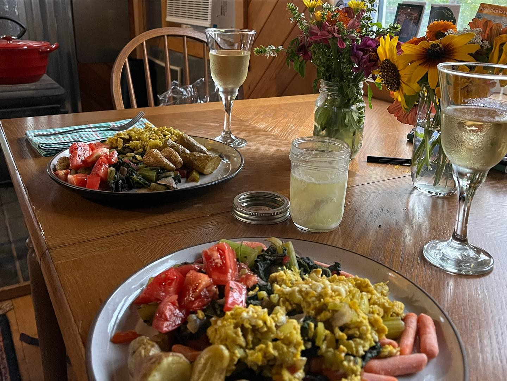

North Carolina#
Calavander (Chapel Hill Creamery)#

Style: Asiago
Milk: Cow
Purchase location: Weaver Street
Purchase date: 05/28/22
Julie’s comments: Pale orange firm cheese with a thin brown rind. Very nutty and tangy with a hint of caramel. Tastes like a Gouda and a Parmesan had a cheese baby. Creamy, versatile, snackable - I could eat a block of this. Note: rind = not tasty. 3.09/5
Andrew’s comments: Nutty & caramely, agree on Gouda/Parmesan flavor. It’s supposed to be asiago style, but not great resemblance - may have been close before drying out. Kind of gummy texture, not my favorite. Inner part better than rind. 2.7/5
Carolina Moon (Chapel Hill Creamery)#

Style: Brie-like
Milk: Cow
Purchase location: Carrboro Farmer’s Market
Purchase date: 12/11/21
Julie’s comments: White rind with slightly yellow soft interior. Very rich, creamy, buttery - a bit too much for me. Like a brie, but stronger, a bit more buttery & a bit of funk. I respect it, but this isn’t my favorite style of cheese. 3.06/5
Andrew’s comments: Rich & buttery, a bit funky but not too much. Soft center, firmer/chewy rind. I love this cheese, I could eat a whole wheel of this and a baguette for dinner. 4.6/5
Daisy Hoop Cheese (Ashe County Cheese)#
Style: Cheddar
Milk: Cow
Purchase location: Weaver Street
Purchase date: 07/18/22
Julie’s comments: Firm orange cheese with a thick red wax rind, no holes. Very mild, slightly tangy, a little nutty, pretty generic. Tastes like a mild grocery store cheddar - pretty boring, but quite snackable & could add to burrito bowls or burger (not bad, just v boring). 2.16/5
Andrew’s comments: Orange cheddar, pretty mild but some tangy sharpness, & slightly creamy. Reminds me of cheddar “fancier” cheese sticks. Not the most unique, but very snackable & comforting. Like I could eat a giant chunk of this and a baguette as a meal. 2.6/5
Doeling (Boxcar)#

Style: Other
Milk: Goat
Purchase location: Weaver Street
Purchase date: 07/18/22
Julie’s comments: Soft creamy white cheese with occasional green flakes in center & rind. Creamy, salty, that soft cheese funk that has gotten more aggressive with time. Sends that staticy flavor in my throat… distracts me from any other flavors. 1.76/5
Andrew’s comments: Soft gooey center, a bit slimy, with pretty thin firmer rind. Salty & funky. Hard to explain why but I don’t care for this brand of funk as much as others like New Moon. 1.8/5
Goat Feta (Singing Spring Farm)#
{kind=link}
Style: Feta
Milk: Goat
Purchase location: Singing Spring Farm
Purchase date: 08/13/22
Julie’s comments: Engagement cheese! Gifted, then bought, from the AirBnB host/farmers where we were engaged! Up front, very salty with a bit of tangy & grassiness from the goat, then still very salty. Needs to be diluted because it’s a bit too briny. But it’s made locally with love for our love. 5/5 for context. 2.03/5
Andrew’s comments: Very salty, briny, more so a couple months in. Unfortunately the salt is a bit overwhelmin, but really nice on top of a salad or food where diluted. But also tastes like love, and so cool that they made with goats we met! Infinity/5 for context. 2.4/5
Herbed goat cheese log (not sure which one) (Celebrity Dairy)#
Style: Chevre
Milk: Goat
Purchase location: Carrboro Farmer’s Market
Purchase date: 11/15/21
Julie’s comments: Goat cheese log that is flavorful inside and out. Coated with herbs, black pepper, salt, but inside also has zest/garlic herb flavor. Creamy, crowd pleaser. Froze to save and still tastes good! 4.1/5
Andrew’s comments: So delicate & creamy & rich, the cheese melts in your mouth. Salt & herbs on outside are subtle but tasty. Good solo, on chips, on salad, etc. 4.2/5
Hickory Grove (Chapel Hill Creamery)#

Style: Other
Milk: Cow
Purchase location: Weaver Street
Purchase date: 08/21/21
Julie’s comments: Butter and cheddar and a leeetle brie had a hot threesome to make this fine cheese. Semi soft, pale yellow/firm rind. A bit funky but only subtly (but smells funkier). Great on crackers, with salty spread, or alone. Creamy inside. 4.81/5
Andrew’s comments: A top tier cheese to be sure. Very buttery and nice semi squishy texture, kind of like a butter & paneer baby (but better than that sounds). Great with salty tortilla chips. 4.7/5
New Moon (Chapel Hill Creamery)#
Style: Brie-like
Milk: Cow
Purchase location: Weaver Street
Purchase date: 07/10/22
Julie’s comments: Soft white cheese - white criss-crossed rind with gooey tan inside, “semi-ripened”. Very creamy, semi-salty, funky cheese - like the funk/tang/”electric-ish” flavor that goes to back of throat. A bit too funky for me, but not bad. 1.97/5
Andrew’s comments: Interesting texture, semi-firm chewy rind with gooey center. Especially cold it has nice mouth feel. Mild up front, salty funky flavor comes in midway through. Interesting unique funk, has grown on me. 3.5/5
Redbud (Boxcar)#

Style: Other
Milk: Cow + Goat
Purchase location: Weaver Street
Purchase date: 03/19/22
Julie’s comments: Pimenton rubbed & smoked cheese. Hard, yellow/tan, aged cheese with a mottled red/brown thin rind - paprika-y! Mild nutty, salty, tangy flavor in interior. Subtle smoky, woodsy, mildly funky exterior by rind. Quite snackable, a bit dry. Great with pepper jelly. 2.89/5
Andrew’s comments: Hard yellow cheese with interesting granules adding texture. Dried out a bit since we got it. Nutty, salty-sweet, & smoky/spicy (mild) after taste. Semi-funky rind. Great on its own, with chips, or with pepper jelly. 4.3/5
Rocket’s Robiola (Boxcar)#

Style: Other
Milk: Cow
Purchase location: Weaver Street
Purchase date: 03/19/22
Julie’s comments: Funky AF, mild stinky cheese - gray ashy rind, creamy/gooey under rind, then soft crumbly white interior. The gooey part has brie-like flavor - tangy, funky, creamy. Center is more funky, kind of sour, earthy. Rind is deep, earthy, sooty. Good with strawberry habenero jam. Tough to rate. 2.0/5
Andrew’s comments: Truly strange & unique cheese, different flavors come in waves. Funky, stinky rind, then gooey, slimy layer, then soft chevre-like texture. Creamy Brie flavor up front, then earthier barny flavors, then smokey finish. I have to rate higher than pure enjoyment out of sheer uniqueness. 3.7/5
Spring Fever (Prodigal Farm)#
Style: Other
Milk: Goat
Purchase location: Weaver Street
Purchase date: 03/26/22
Julie’s comments: Soft white cheese with crumbly white center, off-white creamy outer layer, & classic white textured rind. Tangy, salty chevre-like interior, then creamy buttery Brie-like outer layer. Mild funk especially in creamy part, which I like less. Has metallic after taste. Overall I like a lot, surprisingly. So good with pepper jelly. 4.39/5
Andrew’s comments: So good & unique. Super creamy, texture in between chevre & Brie. Also has tangy flavor, lemony, some bites even remind me of lemon bar (cheesecake version), but not sweet. Semi salty & nic, mild funk. Agreed about pepper jelly. 4.85/5